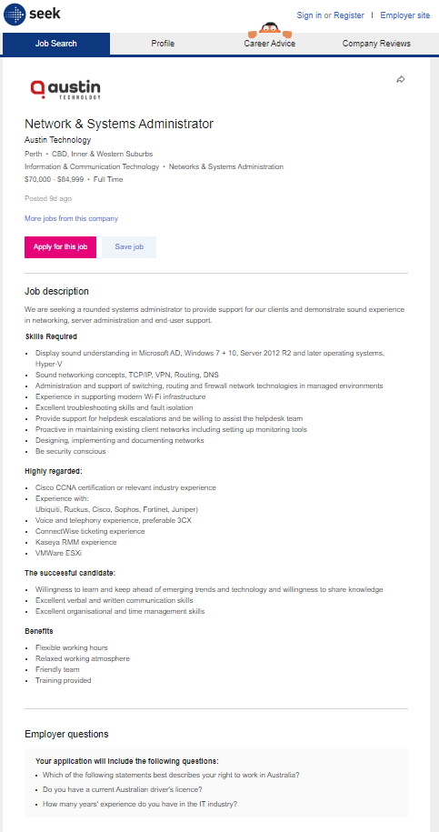

My name is Zachary Scott, and I am 21 years old. I am one of the four members of Spark 22, and my student ID is s3910896. My birthday is in June, and I work as a Hire Controller in Brisbane. App design, computer gaming, fishing, cooking, and sports are just a few of my hobbies. Because I am half-Greek, I enjoy cooking and eating a wide variety of foods with my family. IT has always sparked my curiosity as it is both entertaining and mentally challenging. The field of IT I am most interested in would be server networking. I currently have no formalized IT experience, but I have worked with routing computers and phones to the server racks and ensuring they all go to the correct ports. I am hoping that getting a bachelor's degree in information technology will help me formalize and improve my skills to find a job that better suits my interests.
My Profile is that I am a follower someone who works best when given tasks by a leader. Offering advice to solve practical problems is where I thrive. While I may become exhausted if my task needs a lot of social interaction, I am otherwise charming and have excellent networking skills. Touch is a common way for me to communicate. Usually, I do what needs to be done, regardless of whether my teammates are pulling their weight. However, I am a sensitive person who needs to know that their efforts are valued. I seek harmony and, whenever possible, seek out win-win solutions. I am also a tactile learner who enjoys taking things apart and putting them back together, and when I am bored, I like to tinker or move around. I appreciate physical expressions of encouragement like a pat on the back. I learn by touching and doing because I am a tactile learner. Physical movement helps me understand and remember things.

Ideal Job and Industry Data
- 
- Zachary Scott's ideal job is Network and Systems Administrator. The roles entailed with the job title of Network and Systems Administrator can vary from organisation to organisation where the title is applied. It is a generic role where personnel in smaller organisations would be required to wear different hats from network engineer, server administrator, database administrator, helpdesk to desktop support, dependant on the situation at hand. This is a very varied role and can be quite challenging at times, also can be rewarding too. In larger organisations the scope of the role can be much narrower, as support personnel tend to be more specialised in their roles.
- Software Developer / Engineer (1)
- Computer Systems Engineer / Architect (2)
- Systems Analyst (3)
Network Engineer, my favourite profession, was ranked 15th on the list, a couple behind Network Support Officer. The need for the ability to support businesses transition into the cloud infrastructure space is reflected in the positions of Software Developer/Engineer and Computer System Engineer/Architect, and this development is expected to continue in the immediate future. As the company transitions to the cloud, a Systems Analyst will be needed to ensure that business technology and practises are functioning properly. The position of network engineers has stayed mostly unchanged throughout the last two decades, but it has grown to keep up with technological advancements and the industry's shift to cloud computing.
Applicable Job Titles: Systems Engineer (4), Network Engineer (9)
The top 3 job titles that have not been included in this list are: - Solutions Architect (1)
- Graphic Designer (2)
- .NET Developer (3)
Solutions Architect is the highest grossing job title, indicating that companies choose to get into the cloud as quickly as possible. The career titles Graphic Designer and.NET Developer reinforces the industry pattern of transitioning to the cloud, as old software would need to be redeveloped to fit with the cloud, and fresh software will need to be created to substitute it. This is supported by the fact that Front End Developer and JAVA Developer are ranked sixth and seventh, respectively. The fact that Network Engineering is ranked ninth on the ranking indicates that ensuring network stability and efficiency is still critical to companies in the information era.
Applicable IT Skills:
The top 3 IT skills that have not been included in this list are: - SQL (1)
- JavaScript (2)
- Java (3)
According to Burning Glass, the top three skills of 2018 are SQL, JavaScript, and JAVA, highlighting the latest industry pattern of switching to the cloud and trying to develop an online business footprint on the Internet. The fact that the Project Management ability ranks fifth indicates that these cloud migration programmes are either underway or in the planning stages.
Generic Skills: Communication Skills (1), Problem Solving (2), Organisational Skills (3), Writing (4), Teamwork/Collaboration (5), Troubleshooting (6), Detail-Orientated (8), Quality Assurance and Control (14), multi-Tasking (20)
The top 3 generic skills that have not been included in this list are: - Planning (7)
- Creativity (9)
- Research (10)
The skill Planning is not a useful skill to have in this role as issues can arise at any time and may not be able to be predicted. I also believe that creativity is will not be a necessary ability, but it could be useful in seeing different perspectives on different situations. A research ability is more useful in a consultant or architect position, but it is not needed in a day-to-day Network Engineering role. When running in teams and interacting with others outside the team within the organisation, communication skills is the most necessary skill to have. When dealing with technological problems, problem solving is often needed, as are organisational skills to work with them.
My opinion of becoming a Network Engineer is still unchanged, as I believe it a role of great significance even though businesses are moving to cloud computing. I would still enjoy the technical challenges that would come with the role and the career opportunities that it could lead to. Once I have become a Network Engineer, I would complete more training and education to enable me to move into a Network Administration Role.
Applicable Occupations: Network/Systems Administrator (4), Help Desk Officer (5), Network Support Officer (12), Network Engineer/Architect (15)
The top 3 occupations that have not been included in this list are: